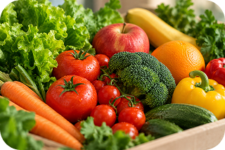
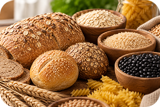
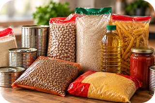
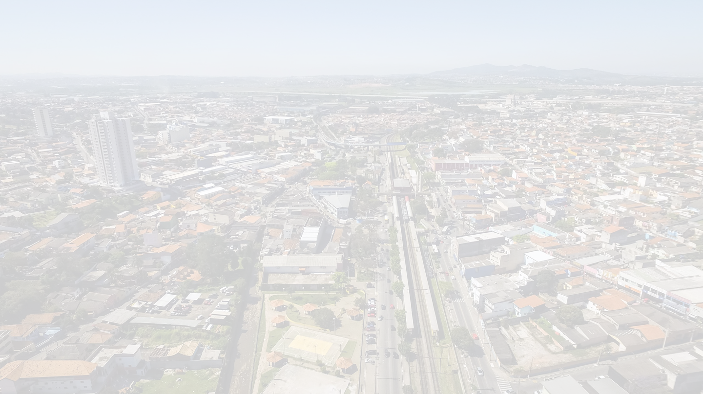
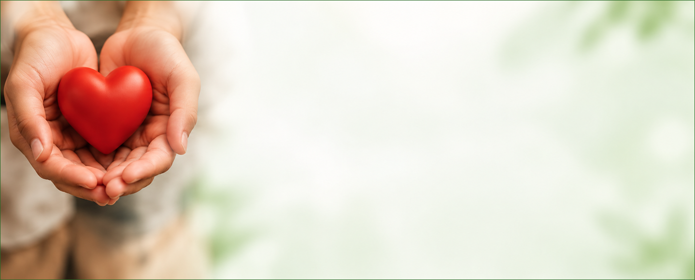
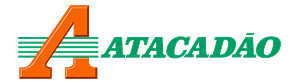
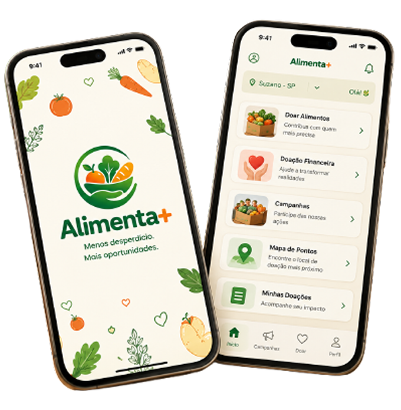

Aproveita alimentos
que ainda estão bons
ALTO TIETÊ
Menos desperdício.
Menos desperdício.
Mais Oportunidades.
O Alimenta+ é uma plataforma digital que organiza campanhas e ações de arrecadação de alimentos e recursos para ajudar pessoas e comunidades em situação de vulnerabilidade social no Alto Tietê.
Conheça o AppConecta pessoas,
empresas e comunidades
Mais eficiência
e transparência
Um Alto Tietê
mais justo
O PROBLEMA
Enquanto alimentos são desperdiçados,
18,9 milhõesde domicílios brasileiros
em algum grau de
insegurança alimentar
(IBGE, 2024)
13,2%dos alimentos são perdidos
globalmente após a produção
e antes do varejo
(FAO)
8% a 10%das emissões globais de gases
de efeito estufa estão associadas
às perdas e ao desperdício de alimentos
(FAO)
Enquanto alimentos são desperdiçados,
milhões de pessoas ainda passam fome.
Todos os dias, grandes quantidades de alimentos ainda próprios para consumo
são descartadas, enquanto muitas famílias enfrentam dificuldades para se alimentar.
em algum grau de
insegurança alimentar
(IBGE, 2024)
globalmente após a produção
e antes do varejo
(FAO)
de efeito estufa estão associadas
às perdas e ao desperdício de alimentos
(FAO)

SOBRE O PROJETO
Conheça o Alimenta+
Uma iniciativa que utiliza a tecnologia para combater o desperdício de alimentos e promover a segurança alimentar no Alto Tietê. Organizamos campanhas e ações próprias, conectando quem pode contribuir a quem mais precisa.
próprias
Alto Tietê
com a comunidade
e acompanhamento
COMO FUNCIONA?

1
2
3
4
Doar é simples e o impacto é real.
Cada pessoa e empresa pode contribuir de uma forma. Veja como:
Para pessoas físicas
Escolha uma campanha, selecione os alimentos ou cestas básicas indicados e faça sua contribuição financeira. Pequenas atitudes geram grandes mudanças.
Para empresas
Cadastre alimentos excedentes que ainda estão próprios para consumo. O Alimenta+ organiza a coleta e destinação por meio de parceiros logísticos.
Cadastro
Crie sua conta
Escolha
Selecione uma campanha
Contribua
Doe alimentos ou recursos financeiros
Acompanhe
Veja o impacto da sua doação
O QUE PODE SER DESTINADO?
.png) Laticínios
Laticínios
 Todos os alimentos destinados devem estar próprios para consumo e respeitar as normas sanitárias.
Todos os alimentos destinados devem estar próprios para consumo e respeitar as normas sanitárias.
Diversos alimentos podem fazer a diferença.

Frutas e verduras
Cereais e grãos
Alimentos não perecíveis
Laticínios

ONDE ATUAMOS?
Do Alto Tietê para um futuro melhor.
Atuamos em todas as cidades da região, aproximando recursos de quem mais precisa.
- Suzano
- Arujá
- Mogi das Cruzes
- Santa Isabel
- Poá
- Guararema
- Ferraz de Vasconcelos
- Biritiba Mirim
- Itaquaquecetuba
- Salesópolis


DOAÇÕES FINANCEIRAS
Sua contribuição movimenta
 Transporte e logística
Transporte e logística
 Armazenamento e Infraestrutura
Armazenamento e Infraestrutura
 Aquisição de Alimentos
Aquisição de Alimentos
Redução de campanhas
Manutenção da Plataforma
Sua contribuição movimenta
toda essa rede.
NOSSO IMPACTO
Reduzir
Ampliar o Acesso
 Fortalecer
Fortalecer
 Gerar Mais
Gerar Mais
O impacto que queremos gerar.
Trabalhamos por um futuro com menos desperdício e mais oportunidades para todos.
O desperdício de alimentos.
Ao alimento para as pessoas em situação de vulnerabilidade.
A solidariedade e o senso de comunidade.
Transparência e eficiência nas ações.
PARCERIAS
Juntos podemos ir mais longe.
Contamos com o apoio de empresas, estabelecimentos parceiros e logísticos para tornar nossas ações possíveis.

CONHEÇA O APLICATIVO
Acompanhe campanhas, faça suas contribuições e veja o impacto da sua ajuda de forma simples e segura.
- Campanhas
- Doações
- Notificações
 Histórico
Histórico

NOSSA EQUIPE
 Fábio
Desenvolvimento do site e prototipagem.
Fábio
Desenvolvimento do site e prototipagem.
 Mari
Pesquisa de UX e criação das interfaces (UI).
Mari
Pesquisa de UX e criação das interfaces (UI).
 Ge
Documentação do TCC.
Ge
Documentação do TCC.
 Guilherme
Desenvolvimento do hotsite.
Guilherme
Desenvolvimento do hotsite.
 Lucas
Desenvolvimento do aplicativo.
Lucas
Desenvolvimento do aplicativo.
Quem faz o Alimenta+ acontecer
Um time dedicado a transformar tecnologia em impacto social.